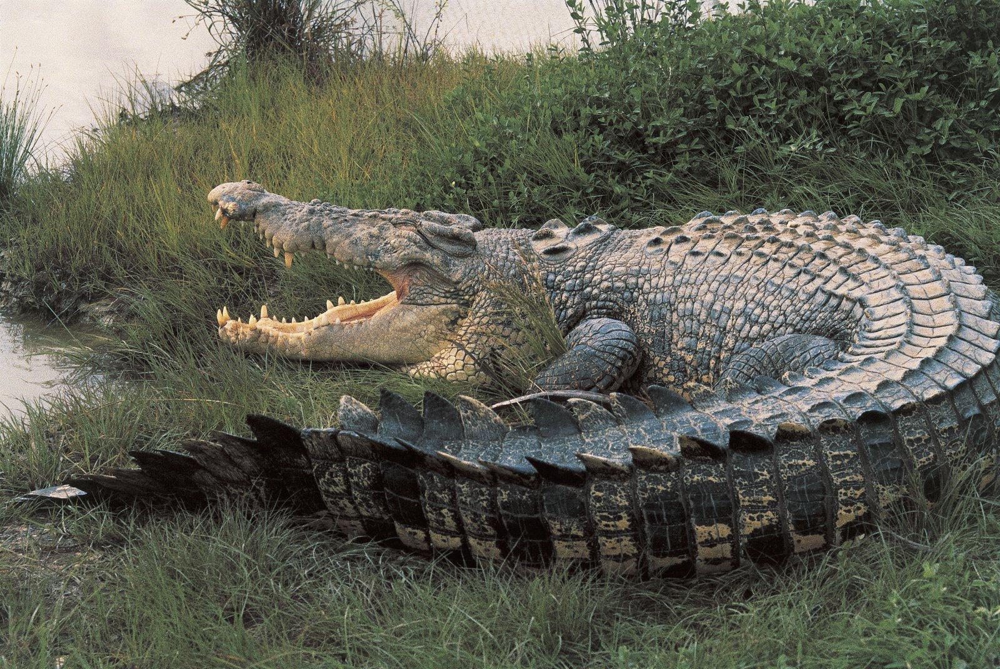
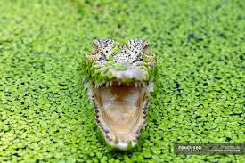

Crocodiles!!!!

As you can see crocodiles are huge, adults can range from 15 feet to 23 feet long and can way a max of 1 ton-without including the dwarf crocodile.
Crocodiles also have the strongest bite force of any animal in THE WORLD!! Terestial and aquatic, the force of the bite was from a 17 foot long crocodile so it wasnt the best result but it was a whopping 3700 psi.But scientists estimate it can go up to 5000 psi.
.jpg)
Crocodile jumpscar-e
Angry croc
Look at these croco-mations
.jpg)
Even more croco-mations
.jpg)
The difference between a crocodile and an alligator is that a crocidile has a V shaped snout and they are usually bigger but alligators have a U shaped snout. Crocodiles are also ambush predators and will snatch prey that are drinking water. Crocidiles can even kill the biggest of animals such as buffalo and hippos. There are also 23-24 flavors of this thing so they arent like insects where they have like a billion species of one kind.
A crocodiles buffet consists of...
- hippos
- wildebeast
- deer
- antelopes
- hogs
- birds
- crabs
- fish
- bats
- invertibrates
or just about anything thats dumb enough to mess with these oversized lizards.
Also sometimes they hunt in groups so if they are trying to take something down especially in groups its a guaranteed W for the Crocidiles.
Even baby crocidiles are huge.They are 9-12 inches when they hatch.
Crocidiles have the biggest difference between baby to adult in weight for any land animal ranging from 70 grams to 1300 pounds.
Crocidile teeth can measure up to 5 inches long ,and can have 60-66 teeth in their jaws.
Crocodiles are even known to win against sharks even the great white-The reason why crocs win is because they are simpily stronger and probably more agile.Plus their prestigous ability of the "Death roll".
The death roll is where the crocodile or any crocodilian latches onto their prey and then they rotate or spin around ferousiously while dragging them underwater which pretty much means game over.